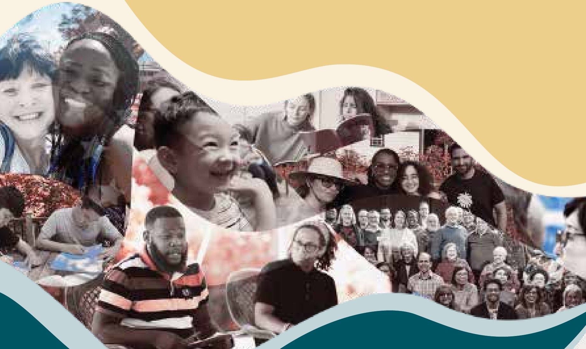

Plates from the arts issue
“Indeed the arts as a whole, so integral a part of the development of a community from the start, stand out in such settings as an important means of generating joy, strengthening bonds of unity, disseminating knowledge, and consolidating understanding…”
The Universal House of JusticeAbout this issue. This issue explores the many ways creative expression can contribute to the transformation of individuals and communities, from music and visual art to the creative practices woven into grassroots efforts. The stories that follow offer glimpses of communities drawing on imagination, art and spiritual insights to contribute to the betterment of humanity.


Race amity
The Louis Gregory Bahá'í Institute continues legacy of race amity work
Linda Ahdieh Grant
Earlier this year, the Bahá'ís of the United States addressed a message titled “A Common Endeavor” to every soul who holds “the promise of America in their heart.” The statement describes the common endeavor that has brought America to this moment in history, acknowledging the generations that have labored to realize the ideals on which our country was founded, in order to “build a more perfect union where all can flourish.”
Currently, Bahá'ís' contributions to this common endeavor build on the foundation laid by previous generations. The Louis Gregory Bahá'í Institute (LGBI), named after early American Bahá'í and race amity leader Louis George Gregory, carries on the legacy of Gregory's unifying racial justice work through community-building spaces and efforts.
Located in Gregory's home state of South Carolina, LGBI is an education and retreat center dedicated in 1972 and home to half a century of community-building work. In recent years, LGBI continues to contribute to the training and empowerment of young people centered on the principle of the oneness of humanity.

Gregory was born in Charleston, South Carolina in 1874 to a family that fostered in him spiritual virtues and the love of God. Education was highly valued and Gregory was devoted to his studies. He attended Avery Institute in Charleston, before studying at Fisk University and then Howard University Law School. Soon after becoming a Bahá'í while living in Washington, D.C., Gregory met ‘Abdu'l-Bahá during his pilgrimage in 1911. His marriage to Louise Mathew in 1912 was encouraged by ‘Abdu'l-Bahá and became the first interracial marriage of Black and white Bahá'ís. Gregory welcomed ‘Abdu'l-Bahá to the United States and arranged for His historic talk to about 1,600 people at Howard University in 1912.
That pure soul has a heart like unto transparent water. He is like unto pure gold. That is why he is acceptable in any market and is current in every country.
‘Abdu'l-Bahá, of Louis Gregory, 1920
Gregory served on the National Spiritual Assembly of the Bahá'ís of the United States for many years. A gifted public speaker, he travelled to 46 states as a traveling teacher, and a champion of the Tablets of the Divine Plan and all Plans that followed. He was a key participant of the first Race Amity Convention called for by ‘Abdu'l-Bahá, as well as conferences throughout the country that followed.
Gregory was appointed to the esteemed role of Hand of the Cause of God after his passing in 1951 by the grandson of ‘Abdu'l-Bahá and Guardian of the Bahá'í Faith, Shoghi Effendi. The work of the Hands of the Cause is the propagation and preservation of the unity of the Bahá'í Faith. Those appointed to serve in this role provide a unique service to the Bahá'í community. There are no living Hands of the Cause today, as they were only appointed by Bahá'u'lláh, ‘Abdu'l-Bahá and Shoghi Effendi. The function of the Hands of the Cause was carried into the future by the Institution of the Counselors, including Counselors, Auxiliary board members and assistants to the auxiliary board members.
In the century since Gregory first taught the Bahá'í Faith in South Carolina, there have been countless contributions made by individuals, communities and institutes to translate the Bahá'í teachings into reality.
Today, Gregory's childhood home in Charleston is a Bahá'í museum. The Louis Gregory Bahá'í Institute is located a few hours north, in Hemingway, and is home to Radio Bahá'í WLGI, which was also named in honor of Gregory's illustrious soul. Radio Bahá'í WLGI is a noncommercial radio station that started broadcasting in 1984. In addition to serving Northeastern South Carolina and Southeastern North Carolina, it can also be streamed online at www.radiobahai.us. Sacred writings are included in daily programming, alongside community-building news and uplifting music. Both the institute and the radio station have touched generations of souls.
Some of those souls influenced by the Louis Gregory Bahá'í Institute returned to the property in 2022 to celebrate its 50th anniversary. The anniversary program highlighted the Institute's history and also allowed friends to consider its future. There were friends in attendance who had previously received training at the Institute that decades later they were applying in their lives. At the celebration, participants honored Gregory and considered how serving their communities can continue the legacy of the Hand of the Cause.
Its programs host children's and junior youth camps, devotional gatherings and institute training courses. It is also used for unit convention and seasonal schools. Most recently, it was the training ground for the Southeast Region's Summer of Service program, hosting 25 youth along with tutors, who prepared for their summer service through study of institute materials. The youth, of many races and faiths, engaged in conversations that invoked Gregory's pioneering work to the current needs of this country. They studied and memorized the Word of God, they prayed and called on divine assistance, they built friendships across what society deems as impermeable racial walls, and they steeled themselves for a summer and life of service.

The beautiful Louis Gregory Bahá'í Institute property is always in need of care and attention. The Regional Bahá'í Council of the Southeastern states warmly welcomes friends who are interested in serving in this unique location to send an email inquiry to secretariat@rbcse.org.
A great exhilaration
In its message of December 31, 2025, the Universal House of Justice drew renewed attention to the imperative of teaching the Bahá'í Faith, observing that “believers increasingly appreciate the privilege of being able to acquaint a soul with the mission of Bahá'u'lláh—and, beyond this, to lovingly help a soul who stands at the doors of the Faith to step within.”

Hand of the Cause of God Louis G. Gregory wrote: “There is indeed a great exhilaration in the teaching service…. I hope you will use every endeavor to teach. It is the most confirmed of all human activities, the most productive of results.” What teaching methods did Gregory use that we can learn from?
When Gregory became a Bahá'í in 1909, he immediately began teaching within his professional, academic and social circles, inspired by Bahá'u'lláh's injunction to “… bestir yourselves as soon as ye recognize your Lord…. Unloose your tongues, and proclaim unceasingly His Cause.” As the President of the learned Bethel Literary and Historical Society, he immediately arranged four presentations which had a powerful influence.
Bahá'u'lláh declared that “the movement itself from place to place, when undertaken for the sake of God, hath always exerted, and can now exert, its influence in the world.” In 1910, Gregory embarked on his first independent travel teaching journey. Years later, he recalled that “in every city, people were found who accepted the great Message, however crudely and abruptly given, and the spirit was powerful.” He tailored his talks and newspaper articles to specific audiences addressing racial amity and unity, comparative religion and the Bahá'í principles.
As part of the 1919 systematic program for teaching in the South, Gregory and another early African American Bahá'í, Roy Williams, formed a traveling teaching team for nine months. The Star of the West reported that the two souls “are sending in lists of those interested, showing splendid results, and are most happy in the work.” Fully aware of the dangers, Gregory undertook at least three trips as part of a team of interracial teachers. In 1931, Gregory and Willard McKay, who became a Bahá'í in 1925 and had lost his job as a professor because of his outspoken friendship with people of all races, set out on an 18-day teaching trip. Described as “two tall men, one dark, one very fair, both radiant,” they did everything together, to the astonishment of those who met them.
Gregory and his wife Louise Mathew Gregory, who was an experienced international pioneer and spoke fluent French, pioneered to Haiti in 1937. Gregory was 63 years old and Mrs. Gregory was 71. They were able to meet people of culture and capacity, and the young intelligentsia, and held study classes for them twice a week. They also found a translator and held study classes in Creole.
Gregory was among the first to carry out intensive teaching, as early as 1920. Shoghi Effendi describes the objective of intensive teaching as the establishment of “a small group of well-confirmed, devoted and active believers who will be able to carry on the work after [the traveling teacher's] departure.” In 1939, Lydia Martin was the Dean of Women at the Arkansas Agricultural, Mechanical, and Normal College in Pine Bluff, Arkansas. Her parents had been taught the Faith by Gregory in Cleveland, Ohio, in 1913. Through her efforts, the College invited Gregory to be their speaker during Religious Emphasis Week, and he stayed for two months.
Gregory also taught the Faith through correspondence. Gregory “had friends whom he wrote in all age groups and students in every colored college and university in the land. He always answered every letter…”

Community
New Yorkers create more unified communities through the arts
Michelle Goering
How can the arts bring neighbors together and create spaces for deeper connection and collective problem-solving? New youth initiatives in New York City inspired by Bahá'í teachings, some centered around thought-provoking films or painting with children, are demonstrating the power of shared artistic expression. In both cases, the impetus came from a community's creative interests.
“Our initial film gathering was meant for our community—friends, neighbors and strangers—to come into my home and share a meal before we watched a selection of short films revolving around a theme,” says Felicia Sobhani. She and her partner Christian Guaman are cinephiles, and see film as a shared language. “It's how we, as artists and people of wildly different backgrounds, found commonality, moved by narratives and storytelling,” says Guaman. “We'd leave a film and think, ‘More people need to see this.’”
Noticing “how films spoke to each other,” Guaman says the idea was sparked to use this artistic medium to start neighborhood conversations around topics of concern. Sobhani and Guaman spread the word to their Harlem neighbors and friends, many of whom walked over, that the evening's selections would center around children and the collective responsibility to care for them.
Sobhani says, “People entered our home with such zeal. Before the screening started, we took a moment to admire the room filled with an array of people. The diversity was so rich – it alone made the night worthwhile.” After chatting over dinner and experiencing the films, participants shared what resonated with them and “how they wanted to show up for children,” says Guaman. Inspired, the group shared a prayer for the children in their lives and community.

Across the bridge in Crown Heights, Brooklyn, Juliet Bogan decided to put brush to canvas at a local park. Bogan enjoys oil painting, and brought her supplies to express creativity in the open air. Aware that children might ask to join, she also brought along washable children's paints, a pad of paper and extra brushes.

And paint I most certainly did not! The arts are magnetic.
Juliet Bogan
As she prepared to paint, more than half a dozen children and their parents gathered around her. Using three nearby tables, Bogan spent the afternoon guiding the expanding group of children and getting to know the families. Since then, the classes are held weekly in this same plaza. Friends from the neighborhood, many of them youth, are now supporting the effort. As a result, relationships among a growing group of families living in the complex adjacent to the park are developing.

The public kids' painting activity led to meeting the president of the complex, who invited Bogan and her collaborators to Family Day, a day of food and fun, gathering organizations supporting the community. There, an art activity for kids drew in more families, and provided a chance to converse with parents about family needs, including childcare and activities for children and teens that help them develop capacities, both practical and spiritual.


Bogan says, “I realized [while] observing the children that the arts are an incredible way to . . . think deeply about our communities, to treat each other with love and respect and to imagine the future reality we want to build.”
The joy created in both of these activities structured around the arts has been immediate and plentiful. Sobhani says, “For months we wanted this space, and just as often we'd get lost in the planning and then talk ourselves out of hosting. But the night moved on its own, easy and joyful, like it had been waiting for us to get out of the way.”
“We're hoping to make these film deepening spaces a regular home for our community,” adds Guaman.
Using the arts in community is valuable. Bogan says, “When we know that art is a tool for connection and worship, we will see that our mutual understanding of each other, our capacity to empathize, our consultations, our ability to imagine new realities, our centering of youth, will all be strengthened… When we bring that world into our communities, we open up new avenues for experimenting, for supporting each other, for playing.”
These artists found their passions a catalyst for new connections. Sobhani says, “It was a night of genuine friendship, with everyone meeting someone new.” Her friend Jan, an elderly neighbor at the inaugural film gathering, said, “We need more of this.”

In conversation
Two artists reimagine the role of art through a spiritual framework
Neena Rouhani
At an exhibition during this year's Los Angeles Design Weekend, visual artist Maya Mansour overheard the curator explaining the Bahá'í calendar to visitors who had stopped to admire it. The Bahá'í calendar, which is composed of intercalary days alongside 19 months named after various divine attributes, such as splendor, beauty and light, was the subject of Mansour's recent design project and had caught the attention of the exhibition curator.
The moment affirmed Mansour's hope behind the project: Thoughtfully designed artwork can spark curiosity and attraction to the Faith. “I really changed the way that I think about being an artist and teaching the Faith,” Mansour says. “These systems that we have — like our calendar — lend themselves so beautifully to artfulness and thoughtful design.”
Mansour, a photographer and co-founder of the nonprofit Black Image Center, created the calendar after realizing that the rhythm of Bahá'í life was not reflected in the Gregorian calendars she used every day. What was initially a personal project grew into Studio Kam Kam, an initiative named after ‘Abdu'l-Bahá's phrase “little by little, day by day” that brings together artists and designers from different religious backgrounds to create intentionally designed Bahá'í goods for everyday use. For Mansour, the project has unfolded alongside her own understanding of how art and beauty can make spiritual ideas accessible beyond the Bahá'í community itself.
This year's calendar was co-designed by Natal, a Dutch musician and graphic designer who is not a Bahá'í. “I found his work on Instagram,” Mansour says. “I got an ad for a concert and I really liked the design of the flyer, and I reached out to him and I asked if he wanted to help me.” Together, they created the visual direction for the calendar, drawing inspiration from vintage Bahá'í book covers and old pamphlets from the 1970s and '80s that were used to teach the Faith. “It was just such a delightful experience, and it ended up being so fun to share the Faith with someone [simply] as a collaborator,” says Mansour.

For musician and sound artist Calla Paleczny, the Bahá'í Faith influences her creative projects in unconventional ways. While her early expressions of Bahá'í-inspired art involved putting the Writings to music, she now uses her knowledge and experience with sound to “explore spiritual reality and expand the ways in which we engage with ideas of the divine.”
Despite studying music extensively, Paleczny initially struggled with the idea of pursuing it professionally. “I thought because I love it so much, it's selfish,” she says. The Bahá'í teachings' emphasis on the value of the arts helped her to accept the idea that developing her abilities in music could be a meaningful way of contributing to the well-being of her community.
Like Mansour, her understanding of artistic practice positions the artist as responsible not only for personal expression, but for deepening collective understanding and contributing to the life of society. For her master's thesis concert, Paleczny created a piece imagining rocks and boulders becoming animate and floating through the sky like clouds. The composition grew out of several weeks she spent working at an open-pit gold mine, where the continuous sounds of grinding rock, moving earth and machinery seemed to “filter into” her body. The resulting installation used 10 speakers to create the sound of boulders moving and grinding overhead, while an ensemble below plucked instruments including cello, domra, jetigen and banjo.
The work reflects on the smallness of human beings in relation to geological time and larger forces of the natural world, and the possibility of imagining the “aliveness” of things we perceive as inanimate. Paleczny's thinking about the work is inspired in part by Bahá'u'lláh's mystical text The Four Valleys, which shapes her understanding of the different ways people can approach the divine. She believes that the mineral kingdom possesses spiritual potential, expressed within the limits of material reality and perceived according to the observer's own capacity. She offers resilience as one quality that might be especially apparent in minerals.

In guidance for the Bahá'í community, Shoghi Effendi discouraged the development of a distinct style of Bahá'í music, painting or writing, explaining that believers should be free to create according to their talents. “The further away the friends keep from any set forms, the better,” his secretary wrote, explaining that the Faith's universal character could not be confined to particular cultural forms. For Paleczny, this guidance has opened space to question some of the assumptions underlying music composition, which she explored in a presentation at this year's Association for Bahá'í Studies conference.
In conversation with The American Bahá'í, Calla Paleczny and Maya Mansour discuss the expression of their Bahá'í identities through art, how a spiritual framework can change the role of an artist in society, and the spiritual dimension of attraction to beauty. Responses have been edited for length and clarity.
How has the Bahá'í Faith changed the way you understand the role of an artist in society?
Mansour The Bahá'í Faith has influenced my approach to work in general. I think about that quote, “Work done in the spirit of service is the highest form of worship.” I try to reflect on that when I'm thinking about a new project or endeavor and make sure that everything I do has some element of service. I [also] feel like being an artist is just making a ton of decisions and then moving forward to the next one. It becomes quite an intuitive process. Outside of making art, I try to do things to protect and nurture my intuition, which I really think is my relationship with God.
Paleczny The Bahá'í perspective is of music being really valuable and that it can be a noble endeavor. There's a place for it to be a beautiful and important way of being of service. I remember looking towards the writings, to the guidance and the community itself. This notion of looking towards your own skills and capacities, the strong valuing of the arts, gave me permission to see value in it myself and begin to pursue it more directly as a profession.
What do you hope for your art to explore or express?
Mansour I mainly am a portrait photographer. My goal whenever I'm taking someone's portrait is for them to get those photos back and feel that they truthfully reflect who they are, what they look like and feeling that sense of satisfaction. That can be so rare. I know from experience.
Paleczny My primary interest in my art practice is to explore reality. My art making is always propelled by questions about the nature of reality and how we perceive it. My overarching desire is to use my knowledge of sound as a way of exploring spiritual reality and hopefully expand the ways that we engage with ideas of the divine.
Maya, what are your hopes for Studio Kam Kam?
Mansour Creating the calendar changed the way I think about being an artist and teaching the Faith. With Studio Kam Kam, I'm not making a Bahá'í-inspired calendar. I'm making a Bahá'í calendar. It just is Bahá'í. My number one goal is that someone walks into your apartment and they're immediately drawn to something decorative and they're like, “Oh my gosh, what is this?” And it's the Bahá'í thing. I think about the spiritual concept of attraction to beauty and using that as a teaching tool. What if you have this really amazing tote bag and someone stops you on the street and says, “What is that? What does that quote mean?” I know someone whose mom became a Bahá'í because someone in her city was wearing a pin that had ‘Abdu'l-Bahá's face on it. She said, “Who is that guy?” And they told her about the Faith. One of my other friends' [relative] became a Bahá'í because she loved the calendar system so much. She thought it was so cool and wanted to be part of it.
Calla, you've spoken about The Four Valleys as a text that opens up different ways of approaching the divine. How has that understanding shaped the way you think about art and music?
Paleczny I think the implications of a text like that is to call me into reflecting on how I am engaging with the different ways of approaching the divine within myself and with other people. The degree to which I am able to navigate the subject of divinity through a combination of both logic and music and art is also the degree to which I can invite others to engage in conversations about these topics. One thing that strikes me about the importance of The Four Valleys is that I think art sometimes can be perceived as entertainment or [solely] for feeling, as opposed to understanding that [art] is a way of transmitting knowledge that might not be possible to transmit through pure logic or rationalizing. It's something that contains a knowledge that can be felt, as opposed to it being something that only stirs up emotion, which I think is well expressed in this particular text. There's a degree of knowing that occurs when you intellectually know something, when you physically know something, and when your soul knows it. There are different degrees and I think that the arts and music are bringing us into a kind of embodied knowing.
What has the Faith taught you about the importance of beauty and art?
Mansour It can sometimes feel like no one cares about art – that being an artist is non-essential work. Going to Bahá'í Holy Places helped me realize that art and beauty are some of the most essential things.
Paleczny When I think about what has given me a sense of certitude about the Bahá'í Faith, it's not only what's written in the Writings. It is the actual beauty of the Writings that gives me a sense of knowing.
Scholarship
Association for Bahá'í Studies at 50
Scholarship and knowledge in service to the common good
Adapted from the Bahá'í World News Service
Ottawa, Canada — Scholarship is often imagined as solely the work of specialists, carried out in universities and published in journals. Over 50 years of experience within the Association for Bahá'í Studies (ABS) is pointing toward a broader conception: every person can contribute to the generation of knowledge, and countless social spaces can become a setting for the search for insights that advance human well-being.
This idea permeated the Association's 50th annual conference, which in August brought some 2,100 participants to Ottawa. The gathering began with 16 two-day seminars examining fields including health, technology, media, education, the arts, mental health, scientific inquiry and community-engaged research, among others. A parallel program, organized by the Institute for Studies in Global Prosperity, brought together youth aged 15 to 21 to consider the relationship between their studies, work, service and contribution to the life of society.

Central to these efforts is the purpose of the Association. Shabnam Koirala-Azad, chairperson of the ABS executive committee, described it as creating opportunities for academics, professionals and other interested participants to bring principles from the Bahá'í Revelation into the academic and professional discourses of society, illuminating these areas of human endeavor. Todd Smith, secretary of the executive committee, emphasized that such correlation also moves in both directions: engaging with insights found in wider bodies of knowledge from diverse fields can deepen participants' understanding of the Bahá'í writings.
An expanding field of inquiry
The Association was established in 1975 by the National Spiritual Assembly of the Bahá'ís of Canada. Eighty people attended its first annual conference in Bolton, Ontario. From these beginnings, the Association sought to foster intellectual engagement with the Bahá'í teachings and with questions confronting society. A publishing program began almost immediately, creating avenues for scholarly writing that could also speak to a wider audience. Lectures and conferences were held in university settings, campus associations emerged and students found spaces to consider questions arising from their studies in light of Bahá'í principles.
David Smith was among those involved in the Association's early development and later served as a member of the Board of Counsellors in North America. He recalled being drawn to the possibility that people looking for answers to the problems of society could encounter insights from the Bahá'í teachings in settings of higher learning. The Association, he said, became “this instrument of learning.”
The Association's mandate expanded across North America in 1981, and the Centre for Bahá'í Studies opened in Ottawa the following year. The Journal of Bahá'í Studies, established in 1988, provided another increasingly rigorous way for scholarship to contribute both to the intellectual life of the Bahá'í community and to wider academic conversations.
At a time when scholarship on the Bahá'í Faith outside Persian- and Arabic-language contexts was still limited, the Association helped create settings in which such work could develop and enter broader intellectual conversations. Roshan Danesh, a former member of the executive committee said that from the outset, the Association's concern extended beyond the study of the Bahá'í Faith itself to correlating the Bahá'í teachings with contemporary thought.
According to Pierre-Yves Mocquais, another former member of the ABS executive committee, the Association's experimentation is a key feature that stands out across decades. New approaches unfolded through consultation with Bahá'í institutions as the Association sought to understand how its work could respond to changing needs.
Julia Berger, who also previously served on the executive committee, recalled early efforts where several people from a similar field would sit together in what were called “fishbowl conversations,” thinking aloud about questions in their disciplines through the lens of Bahá'í principles and experience. Berger described what followed as a “steadfast, dogged commitment to iteration and reflection.” Those relatively simple beginnings gradually contributed to the more intensive seminars now held throughout the year and before the annual conference.

David Smith similarly recalled the movement from a conference culture largely centered on lectures toward settings in which participants themselves became more actively engaged in sustained inquiry. Learning to learn, he said, is something the Association has become increasingly capable of fostering.
A further significant milestone in this continuing process came with guidance addressed to the National Spiritual Assembly of Canada by the Universal House of Justice in 2013. It encouraged the development of settings in which people from similar academic disciplines could examine the prevalent discourses of their fields and highlighted the contribution the Association could make as rising generations entered diverse fields of human endeavor.
By then, capacities being developed through grassroots efforts of the global Bahá'í community for systematic action and reflection, consultation, and the application of spiritual principles to social reality were increasingly finding expression within the Association's approaches. “The evolution of the Association is a direct reflection of the capacities that are being built in the Bahá'í community outside of ABS,” said Mariam Ashtiani, a sociologist and member of the executive committee.
Experiences arising from community-building and social-action initiatives, she explained, provide insights regarding how spiritual principles can be applied to lived reality rather than remaining at the level of abstraction. The habits of consultation, learning and reflection developed through such experience have, in turn, enriched how participants approach questions in their academic and professional fields.
Ashtiani stated that “the conference historically was seen as the main vehicle” of the Association's work. Increasingly, it has become an “inflection point” where threads of inquiry pursued throughout the year converge. The Association continues to value the specialized contributions of scholars, she said, while a broader picture has emerged over the last fifty years: professionals and students, together with all others engaged in grassroots efforts can take part in this process.
Research with, rather than on, communities
Valentina Muraleedharan, a geographer and educator, helped facilitate a seminar on participatory action research (PAR), an approach that enables communities to take an active part in investigating their own social reality and in considering responses to the conditions they identify.
Traditional research, she explained, can begin with someone entering a community from a university setting with a question already defined. Drawing on the work of PAR scholars, she noted that participatory approaches instead recognize that people living within a community possess knowledge of their own experience that cannot simply be substituted by outside expertise. The Bahá'í principle of the oneness of humanity carries this idea further. Muraleedharan described how it can soften assumptions of a fixed division between the researcher and those being researched.
There's no insider/outsider when it comes to doing research with a community. Rather, one sees themselves as part of that community, and the challenges they face as their own challenges.
Valentina Muraleedharan
Universal participation, meanwhile, has implications for the meaning of justice in research. A just process cannot be considered solely in terms of the eventual findings or benefits. It also raises questions about who helps identify the problem, formulate the questions, interpret experience and determine what action should follow. “Who is participating in that research becomes really important to achieving a just outcome and a just process,” Muraleedharan said. Research approached in this way can become part of building a community's capacity to understand and respond to its own reality, rather than merely producing knowledge about it.

From individual health to the health of a social body
The principle of oneness has also influenced the direction of Jasmine Miller-Kleinhenz's work in population health. Miller-Kleinhenz, a molecular biologist and member of the executive committee, initially worked on developing treatments for an aggressive form of breast cancer that appeared disproportionately among certain populations of women. Common explanations often pointed to ancestry or characteristics presumed to be inherent in those populations. Yet, she said, the scientific evidence did not adequately support such assumptions.
Reflecting on the Bahá'í conception of humanity as one family prompted another line of inquiry: What conditions were these women living within, and might those conditions themselves leave a biological imprint? Her research began moving outward from the molecular processes within individual bodies to the social and physical environments in which people live, examining access to nutritious food, quality education, green space, and other social conditions, and considering how environments shaped by collective decisions can become embodied in an individual's health outcomes.
For Miller-Kleinhenz, the principle of oneness did not generate a scientific conclusion. It helped make another scientific question visible. “It can't just be something nice that I do on the side,” she said of the effort to apply spiritual principles to daily life. “It also has to shape my research questions.”
Making the assumptions within technology visible
Adib Shafipour, a researcher working on artificial intelligence applications for disease detection, described an exercise he introduced while teaching biotechnology. Students were asked to identify assumptions contained within the technologies they were studying. Shafipour explained that technologies are often described as neutral tools. Yet their design inevitably reflects ideas about what should be optimized, which needs matter, what constitutes progress and how a human being is understood. This becomes especially consequential when the dominant image of the person is that of a consumer whose participation consists chiefly in adopting what has already been produced.
A Bahá'í conception of human beings as protagonists with the capacity to consult, make choices and contribute to their collective life opens another possibility: Communities themselves can become more capable of considering what technologies they need, for what purposes and their likely effects on their relationships and culture. Such examples are modest, Shafipour emphasized, but they suggest that meaningful participation in technological choices need not be restricted to technologists.
Rethinking the starting point of political thought
Michael Sabet, a PhD candidate in political science and the editor of The Journal of Bahá'í Studies, helped facilitate a seminar examining alternatives to political partisanship and polarization. Much political thought, he explained, begins with individuals or groups who are understood to have differing interests. The problem of politics then becomes how those competing interests are negotiated, balanced or contested. “If our beginning assumption… is the oneness of humanity, then the discussion begins on a different footing,” Sabet said.
He drew on the Bahá'í analogy of humanity as a single body. The needs of its different parts are distinct, yet the well-being of one cannot ultimately be secured through the deprivation of another. Applied to political thought, this shifts attention beyond how competing groups can obtain their share, and directs it toward how diverse needs can be understood within the well-being of the whole. Sabet explained that the Bahá'í principle of consultation offers a means to make that shift. It creates a setting in which differing perspectives can be examined together and gradually brought into a shared understanding that can guide collective action. As he put it, “If people come together with the right methodology,” they can arrive at such unity of understanding.
A growing circle of contributors
For Nwandi Lawson, a media practitioner, the widening conception of Bahá'í scholarship is reflected in her own relationship with ABS. “I assumed, as a media professional, ABS is not for me, so I excluded myself,” she recalled. It was only after someone encouraged her to participate that she encountered collaborative spaces in which her professional experience could become part of a disciplined examination of the assumptions shaping media. This year, one detail stood out to her: A Grade 12 student was among those taking part in the seminar on media and society. Experience remains essential, Lawson said, but a field becomes richer when people just entering it can think alongside those who have worked within it for decades.
That intergenerational dynamic was also reflected in the conference's dedicated program for young people. High school and university-age participants examined how their education and eventual professions can form part of a coherent life of service, alongside participation in community-building efforts and social action.
Underlying this widening participation in ABS forums, Todd Smith suggested, is a posture of humility: participants diligently pursuing this work while also seeing themselves as being “on the same path of service where everybody has something to contribute.”

Across America
Communities engage in a common endeavor
In the months since the National Spiritual Assembly shared “A Common Endeavor,” a message laying out the Assembly's vision for the United States, Bahá'ís have been creating opportunities to introduce the message's uplifting and pragmatic content and concepts to their friends and neighbors. Here are glimpses of some of the creative efforts supported by the resources found at acommonendeavor.org.
Sarasota-Manatee County, Florida: Practical steps to oneness
In July, the Bahá'ís of Sarasota-Manatee County, Florida, invited people to a conference focusing on our oneness as a single human family and promoting consultation for problem solving and community building through inclusivity, understanding and detachment. Nearly 50 participants, representing a variety of ages and backgrounds, came together to listen, learn and reflect on the process of consultation. The conference demonstrated that the principles of consultation and the vision of human oneness are not merely subjects for academic study, but living practices to be integrated into the fabric of daily life.
Table discussions allowed people to explore the shared themes with attention to practical ways to bring people together. The YouTube video “Oneness” fostered additional discussion. Youth attending helped capture the spirit of the conference through their creativity and dedication. Abbie Khoshnood created art that was photographed by Seneca Bristol, Sisi Lino and Teresa Pettersen.
Pima County, Arizona: Multifaith gathering
In August, the Bahá'ís of Santa Cruz and South Pima County, Arizona, invited local faith communities to gather for a conversation around the themes of “A Common Endeavor.” Presentation copies of the message and invitations were mailed to 17 faith communities in the cluster. Fifteen members from three faith groups, Baptist, Presbyterian and the Unity Church, joined an equal number of Bahá'ís at the event.
The opening presentation tied the Bahá'í ideals and values in “A Common Endeavor” to America's foundational documents: The Declaration of Independence, the U.S. Constitution, the Bill of Rights and specific amendments. Discussion of spiritual renewal ensued, emphasizing movement from the individual to faith communities to the wider community and nation. The “Oneness” video, a few closing remarks, and a reading of The Prayer for America rounded out the program.

Rutland, Vermont: Sharing at the Rotary Club
In August, Alis Headlam, a Bahá'í, shared themes from “A Common Endeavor” with the Rutland City Rotary Club at its weekly meeting. A high level of participation was facilitated by an interactive slideshow, which invited people to take turns reading aloud and commenting on each section.
A Rotary Club member who organizes donations and service for a local food assistance program raised a concern. The program serves more than 400 people a week and provides more than 2,000 meals a month. He wondered how to bring those being served into conversations and offering solutions, so that they might better recognize their own role in the community. A long-term consultative project, following the process of study, consultation, action and reflection was suggested. One attendee said the presentation made him think about how a simple smile or a wave had the potential to help people feel more welcome in the community.
San Francisco cluster: Institute study seminar
About 40 people studied “A Common Endeavor” as part of an institute study gathering. Across the seminar, the material stimulated thoughtful conversation, deepened understanding of the institute process and inspired participants to continue walking a path of service together. Subgroups drew insights from their own levels of experience. One group was composed of several college students who had little prior experience with the Faith. Their conversation revolved around the important role that youth play in forging relationships that will contribute to the spiritual progress of society.
Another deep conversation took place with a group of Nepali parents whose children participate in children's classes and the junior youth spiritual empowerment program. They said that the message provided a clear and inspiring picture of the purpose underlying this educational process for their children. They said they could see a broader vision of community building, inspiring them toward participating more fully through regular study of the main sequence of courses. The parents shared that several passages touched them deeply, such as those describing the power of loving conversations and the central role of divine love in contributing to social transformation.
Benton County, Oregon: Sharing the message re-energizes community
In rural Benton County, Oregon, one Bahá'í couple shared an invitation to reflect on “A Common Endeavor” using a community listserve. The postings range from lost dogs to cougar sightings to community announcements, and the couple, Paula and Robert Siegel, were very careful to craft an invitation that was respectful of the space. “We wanted the wording to be welcoming and not [proselytising] in any way,” Robert says. “We wanted them to feel like we're all working together.”
In response, a mix of Bahá'ís and friends of the Faith gathered at the Siegel's home, where they reflected together and shared their “small acts of service.”
These little acts of service really are contagious. And they may be small, but they motivate others and they're important.
Paula Siegel
Grass Valley, California: Engaging families through art
Neighboring communities of Grass Valley, Nevada City, and Nevada County, California, shared 30 copies of “A Common Endeavor” at a Bahá'í and Brilliant Star booth at a Juneteenth celebration hosted by like-minded organizations. Art drew people to the booth and opened hearts. A brightly-illustrated Brilliant Star banner and examples of art and craft projects from the magazine attracted and engaged children. The Bahá'ís at the booth shared 45 copies of Brilliant Star magazine on themes of the oneness of humanity, racial justice and racial harmony.
A sculptural art piece of diverse dolls linked arm-in-arm created by Helen Butler, whose artwork appears in “A Common Endeavor,” drew the adults, sparking in-depth conversations about the Bahá'í Faith and people's deep aspirations for this country.

In Ohio, the Yellow Springs News published “A Common Endeavor” in three installments. The publication was made possible through the efforts of the Local Spiritual Assembly, which shared that the paper's editor received the letter warmly and remarked on its timeliness.


Adventures in pioneering
Sparkling spirits in Indianapolis
Story by Cher Gupta, as told to Joyce Litoff. Illustrated by Aria Ghalili.
Two years ago, pioneers in the Westlake neighborhood of Indianapolis helped their young neighbors raise $1,500 towards transportation so they could attend Midwest Region camps for youth and junior youth. They did yard work and other odd jobs, and the fundraising was a huge success. But promoting, tracking and carpooling the participants proved to be quite the undertaking.
Upon reflection, they realized a previously organized car wash had yielded the best return for the amount of work, so they planned and promoted another. One blistering June morning, attendees of a breakfast and devotional program at the local Bahá'í Center were offered a car wash service by youth volunteers.
Hosting a car wash sounds simple, but there was much to consider: What supplies were necessary? Should they work in teams? How much would they charge? How would they track people, cars and electronic payments? How should they present themselves to customers? It became an opportunity for open consultation, listening, learning, kindness and commitment. Four youth, between 14 and 17, washed 10 cars in two hours, earning $215 towards their goal. Happy customers went home in sparkling cars that matched their sparkling spirits.